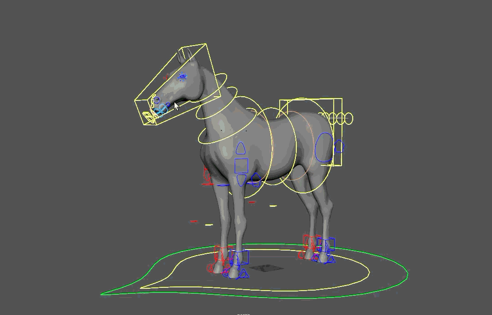
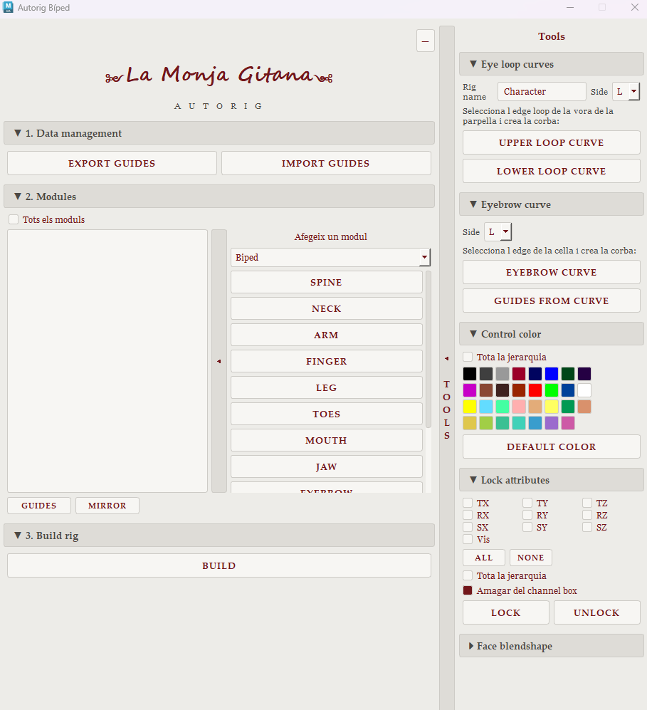

La Monja Gitana
- Supervised and organised the rigging department.
- Built a guide-based modular autorig in Python for both bipeds and quadrupeds, with guides saved and loaded as JSON.
- Designed a user-friendly PySide2 interface: pick the modules and features you want, and the build constructs only those.
- IK/FK limbs with quaternion blending, soft IK, space switching, ribbon twist on motion paths and a full facial setup.
GRP›SPC›OFF›SDK›ANIM
Modules
SpineNeckArmLegFingersToesEyesJawMouthBrows
View the autorig source code on GitHub ↗

